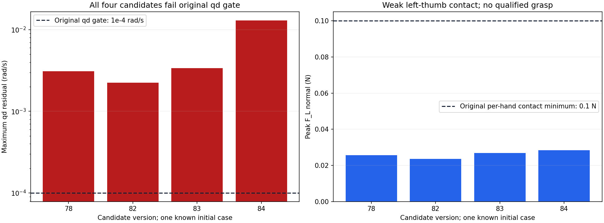
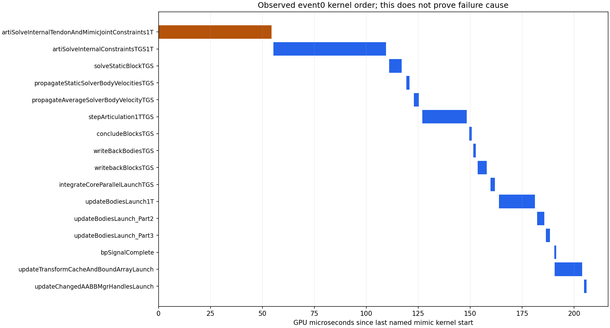

← 主面板 · 先前14条短例和静态四视图 · 完整四路原生视频
新增4条候选短例、合计64个物理子步，全部未通过原始速度耦合约束；另有2次各16步的观测复现。候选和复现均来自同一个已知初态，没有新增独立随机案例，也没有正式留出实验。
本页与先前短例页合计18条候选记录、368个物理子步。数字是诊断记录数，不能当作独立实验样本量或操作空间覆盖证据。学习策略与System 0均关闭。
原始24条传动关系每物理步均要求位置与速度残差≤0.0001。4条新候选的位置残差通过，速度残差仍失败。原物理上限审计通过，但这里仅有左拇指弱接触，各手>0.1 N连续0.25 s的原夹持窗口为0，完整任务未通过。

| 版本 | 变化 | 物理步 | 位置残差rad | 速度残差rad/s | 原模型 | 左手峰值N | 完整任务 |
|---|---|---|---|---|---|---|---|
| 78 | 逐位置步施加原外力，速度迭代0 | 16 | 1.32620335e-06 | 0.00308851758 | 未通过 | 0.025674 | 未完成 |
| 82 | 同外力方式，速度迭代1 | 16 | 1.34110451e-06 | 0.00224640011 | 未通过 | 0.023575 | 未完成 |
| 83 | 同外力方式，速度迭代2 | 16 | 1.28895044e-06 | 0.00338703301 | 未通过 | 0.026893 | 未完成 |
| 84 | 同82，将拇指末节设为共同参考 | 16 | 1.67489052e-05 | 0.0130277863 | 未通过 | 0.028414 | 未完成 |
84将两条拇指约束改为末端关节参考，启动前和原生观测均验证每手仍为6个独立坐标、共24条关系，没有增加锁死自由度的重复约束。其速度残差反而增大，已拒绝采用。
81仅记录CUDA/NVTX，77项原生参数、13项初态和164项物理记录与77逐字节一致；86仅观察本进程的两类内核标量，以上字段与82逐字节一致。两次复现都经过独立目标、力矩、物理和原模型审计，原模型仍失败。
81每物理步实际观察到32次mimic名称内核调用。86每步各观察到33次mimic和内部约束名称内核调用；每条CPU调用均有成功返回码。没有记录GPU指针值或读取GPU描述符，没有改变内核参数或发起额外内核。内核名称、数量、先后顺序并不证明每一条约束的执行质量或失败原因。

矢量时序图 · 逐调用关联与字节一致性 · 参数记录和字节一致性 · 全部标量原始记录
驱动直接返回的mimic参数大小为[8, 4, 4, 4, 1, 1]；内部约束参数大小为[8, 4, 4, 1, 4, 4, 8, 8, 8, 1, 1, 1, 1, 4, 1]。后者有15个参数，参考源码有12个，因此安装版的精确源码提交仍未知，不能直接套用其完整ABI或因果解释。
与参考mimic签名相容的第2号标量为3.25520850311e-05，32倍约为1/960；原注册物理步长为0.001041625。安装SDK设置时间步的源码会将1/dt截断为整数步频。这提示原登记时轴可能与物理时轴存在量化差异，直接运行时getter与USD步频联合校验尚待完成；此前同步声明需要补充这一验收。原始时间戳、视频和失败记录保持原字节。
原始标量字节是观测事实；将字段解释为时间步或迭代标志仍依据相容的参考签名，需要进一步核对。完整夹持、视觉感知、正式机器人配置、充分随机覆盖和真正学习System 0同输入安全对照仍未验收。
79未满足预注册的继续条件，始终未启动。80因共享资源路径缺失而初始化失败，物理步0；随后使用本任务局部Kit配置，保留共享配置。85在发现假定参数布局不符后被启动前校验拒绝，物理步0，未读取临界窗口参数。86改为查询真实布局后完成。编译器首次拒绝重复头文件及缩进问题，其源文件和退出码也保留，未产生模拟试验。
| 要求 | 原门槛 | 状态 |
|---|---|---|
| 回退保持在原始非零速度和延迟下持续安全 | 所有128输入全部原生几何/接触/限位/速度通过完整480控制周期；正式独立集另验 | 联合未验收 |
| 保留操作意图并有实际四臂运动 | 冻结门槛：平均路径与各分层比例>=0.9、四臂运动比例>=0.9、全部26关节平均运动范围>=0.001rad；暂停非威胁臂继续和恢复及任务完成联合验收 | 联合未验收 |
| 强随机、大范围操作空间与定向危害覆盖 | 记录采样分布、全26DOF和速度支持、覆盖图、所有拒绝及分层；不得将筛选集当无条件全空间 | 联合未验收 |
| 科学规范的冻结协议、独立多种子、留出与不确定性报告 | 机制/判据冻结后使用至少两套独立新种子；全部登记窗口与失败保留；无结果后调参；报告最坏种子和适用统计上界 | 联合未验收 |
| 物体位置、姿态、大小、速度、可达性进入明确规划与安全输入 | 逐帧实际对象状态绑定、坐标/尺度校验、可达与拥挤判定、过时/缺失状态安全处理；视觉接口另独立校验 | 联合未验收 |
| 真实物理夹持、抬升、搬运、放置和释放 | 正式100mm抬升、>=2s稳定持物准入；摩擦接触驱动，无reset后物体写位姿、parenting或固定关节替代摩擦夹持；指定手接触和阶段成功联合判定 | 联合未验收 |
| 真实四臂共同任务且有安全与不安全的同输入对照 | 同一raw/S0外生命令初态对象资产；cross/self/table各危害；选择性暂停、另一臂移开、恢复、任务成功和零违规全部通过 | 联合未验收 |
| 完整原生观测和独立危害判据，无漏测或单看画面 | 9021球对与82碰撞刚体原生接触每个物理子步，全74关节/实际目标/FIFO、对象风险；非有限数据或分母缺失即拒绝 | 联合未验收 |
| 网页可审阅的安全对照、完整视角和证据归档 | 俯视/正视/侧视及需要的局部视角正确缩放，原生状态与视频绑定，暂停/恢复/任务侧车；主站链接、实际部署和公共字节回读通过 | 联合未验收 |
证据矩阵27：9项原要求及门槛逐项保持原值，联合验收为false，正式留出数量为0。